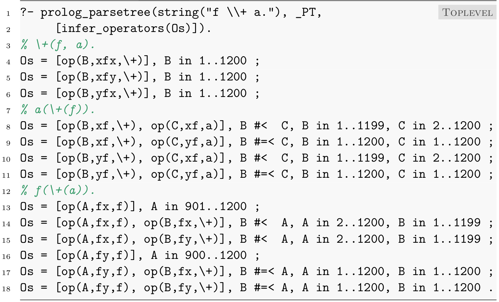
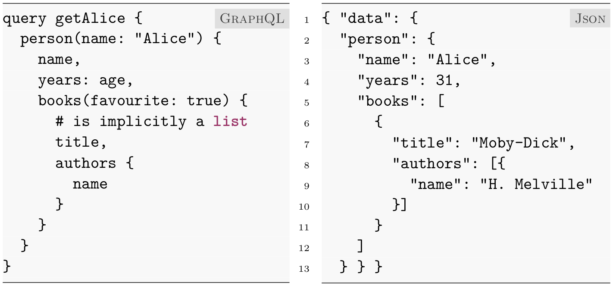

Defining and Implementing
Domain-Specific Languages with Prolog
Falco Nogatz
Chair of Computer Science I, University of Würzburg, Germany
DSLs
Domain-Specific Languages
- Tailored to a well-defined use case
- Rapid prototyping
- Integration via
Parsing or
Embedding
Prolog
- Proven useful as an integration tool
- Long tradition in NLP
- Definite Clause Grammars (DCGs)
- Flexible syntax
Flexible Syntax without Keywords
- Numbers:
1,2.3 - Variables:
A,_b,_ - Atoms:
'C',d,==> - Compound terms:
+(1,2),g(H,i) - Execution based on SLD (Selective Linear Definite clause) resolution with backtracking
/* multiline comment */
% line comment
:- set_prolog_flag(
occurs_check, error).
are(mammals, animals).
are(elephants, mammals).
are(tigers, mammals).
are(As, Cs) :-
are(Bs, Cs), are(As, Bs).
?- are(What, animals).
What = mammals ;
What = elephants ;
What = tigers ;
% wait forever
Internal DSLs via Operators
:- op(700, xfx, are).
mammals are animals.
elephants are mammals.
are(tigers, mammals).
As are Cs :-
Bs are Cs, As are Bs.
?- op(600, yfx, *).
true.
?- X is 1+2*3.
X = 9.- Parentheses-free compounds with operators
- Definition via
:- op(+Precedence,+Type,:Name). - Types
xfx,xfy,yfx,fx,fy,xf,yf - Precedences are in
1..1200; smaller binds more - More than 40 pre-defined operators, e.g.
(500,yfx,+),(400,yfx,*)
If-then-Rules as an Internal DSL
:- op(1100, yfx, then), op(1000, fx, if).
:- op( 900, fx, [neg, not]).
:- op( 850, yfx, or), op( 800, yfx, and).
:- op( 700, xfx, are).
:- op( 200, fx, [a, an, the, no]).
the weather is rainy. % is(the(weather), rainy)
the umbrella is broken.
if the umbrella is broken then there is no umbrella.
if the weather is rainy and there is no umbrella
or the weather is a thunderstorm
then the clothes are wet.
EBNF as an Internal DSL
:- op(1150, xfy, ;), op(1100, xfx, =), op(1001, xfy, '|').
variable_token = anonymous_variable /* 6.4.3 */
| named_variable /* 6.4.3 */ ;
anonymous_variable = variable_indicator_char /* 6.4.3 */ ;
named_variable = variable_indicator_char /* 6.4.3 */,
alphanumeric_char /* 6.5.2 */,
{ alphanumeric_char /* 6.5.2 */ }
| capital_letter_char /* 6.5.2 */,
{ alphanumeric_char /* 6.5.2 */ } ;
variable_indicator_char = underscore_char /* 6.5.2 */ ;
underscore_char = "_" ;
capital_letter_char = "A" | "B" | "C" | ... ;
alphanumeric_char = ... . % sic!
Main Research Problem
Given a number of example sentences,
is it possible to model them as valid Prolog clauses,
and if so, can we automatically infer the required operator definitions?
Approach: Treat Prolog like an external DSL.
Addressed Problems
External DSLs
External DSLs
- Using DCGs:
phrase/{2,3},phrase_from_file/2, etc. - Inlining via Quasi-Quotations, since SWI-Prolog v6.3
:- set_prolog_flag(back_quotes, codes).
xpath --> `every `, iterator, ` satisfies `, condition.
iterator --> ...
condition --> ...
xsd_fragment(XML) :- XML = {| xsd ||
<xs:complexType>
<xs:assert test="entry[@id mod 2 eq 0]/@class = ’even’ or entry[@id mod 2 eq 1]/@class = ’odd’" />
<xs:assert test="every $i in 1 to count(entry)-1 satisfies (entry[$i] lt entry[$i+1])" />
</xs:complexType>
|}.
Definite Clause Grammars (DCGs)
% :- op(1200, xfx, -->).
% head --> body1, ..., bodyn.
palindrome --> [].
palindrome --> elem(_).
palindrome --> elem(X),
palindrome,
elem(X).
elem(X) --> [X], { member(X, [a,b]) }.
% Difference list V0-Vn, i.e. V0 = [...|Vn]
% head(V0,Vn) :- body1(V0,V1), ..., bodyn(Vn-1,Vn).
palindrome(A, A).
palindrome(A, Z) :- elem(_, A, Z).
palindrome(A, Z) :- elem(X, A, B),
palindrome(B, C),
elem(X, C, Z).
elem(X, [X|Z], Z) :- member(X, [a,b]).
term_expansion(X1 --> Y1, X2 :- Y2) :-
term_args_attached(X1, [In, Out], X2),
translate_body(Y1, Y2, In, Out).
?- palindrome([a,b,a], []).
true .
Parse Tree Handling for DCGs
Goal: Represent parsed string by corresponding, automatically expanded Prolog term.
:- use_module(
library(dcg4pt/expand)).
palindrome --> [].
palindrome --> elem(_).
palindrome --> elem(X),
palindrome,
elem(X).
elem(X) --> [X],
{ member(X, [a,b]) }.
?- palindrome(PT, [a,b,a], []).
PT = palindrome([ elem(a), palindrome( elem(b) ), elem(a) ]) .
?- PT = palindrome([ elem(a), palindrome( elem(b) ), elem(a) ]),
palindrome(PT, L, []).
L = [a,b,a] .
Parse Tree Context in DCGs
Solution: Modified term expansion for DCGs.
:- use_module(
library(dcg4pt/expand)).
palindrome --> [].
palindrome --> elem(_).
palindrome --> elem(X),
palindrome,
elem(X).
elem(X) --> [X],
{ member(X, [a,b]) }.
palindrome(palindrome([])) --> [].
palindrome(palindrome(PT)) --> elem(_, PT).
palindrome(palindrome([PT1,PT2,PT3]) --> elem(X, PT1),
palindrome(PT2),
elem(X, PT3).
elem(X, elem(X)) -->
{ member(X, [a,b]) }.
Parse Tree Context in DCGs (cont.)
Result: library(dcg4pt) as a drop-in replacement for DCG expansion.
:- use_module(
library(dcg4pt/expand)).
palindrome --> [].
palindrome --> elem(_).
palindrome --> elem(X),
palindrome,
elem(X).
elem(X) --> [X],
{ member(X, [a,b]) }.
palindrome(palindrome([]), A, A).
palindrome(palindrome(PT), A, Z) :- elem(_, PT, A, Z).
palindrome(palindrome([PT1,PT2,PT3]), A, Z) :- elem(X, PT1, A, B),
palindrome(PT2, B, C),
elem(X, PT3, C, Z).
elem(X, elem(X), [X|Z], Z) :-
member(X, [a,b]).
The Library dcg4pt
Definite Clause Grammars for Parse Trees.
Source-to-Source Transformation with an Additional Argument for Parsing and Serialising.
% library(dcg4pt/expand) provides term expansion:
:- use_module(library(dcg4pt)).
term_expansion(H --> B, Rule) :-
dcg4pt_rule_to_dcg_rule(H --> B, DCG),
dcg_translate_rule(DCG, Rule).
- Support for optionals
?and sequences*,**,+using (open) lists - Translated body contains special caller predicates to recognise (partially) bound lists and parse trees
A Prolog Parser and Serialiser
in Prolog
anonymous_variable =
variable_indicator_char /* 6.4.3 */ ; ...anonymous_variable -->
variable_indicator_char.anonymous_variable(Opts) -->
variable_indicator_char(Opts).anonymous_variable(Opts,
anonymous_variable(PT)) -->
variable_indicator_char(Opts, PT).anonymous_variable(Opts,
anonymous_variable(PT), A, Z) :-
variable_indicator_char(Opts, PT, A, Z).My library plammar
Tokenisation of Prolog
token = variable | name | integer
| float_number | double_quoted_list | open
| open_ct | close | open_list | close_list
| open_curly | close_curly | ht_sep | comma
| back_quoted_string ;
variable = [ layout_text_sequence /* 6.4.1 */ ],
variable_token /* 6.4.3 */ ;
open = layout_text_sequence,
open_token /* 6.4.8 */ ;
open_ct = open_token /* 6.4.8 */ ;
My library plammar provides the predicate prolog_tokens/{2,3}, that works in any mode.
Tokenisation of Prolog (cont.)
% prolog_tokens(?Source, ?Tokens, ?Opts)
prolog_tokens(chars(Chars), Tokens, Opts) :-
term(Opts, term(Tokens), Chars, []).
?- use_module(library(plammar)).?- prolog_tokens(string("What are animals."), Tokens).
Tokens = [
variable([ variable_token('What',
named_variable([ capital_letter_char('W'), ... ])) ]),
name([
layout_text_sequence([layout_text(layout_char(space_char(' ')))]),
name_token(are,
letter_digit_token([small_letter_char(a), ... ])) ]),
name([
layout_text_sequence([layout_text(layout_char(space_char(' ')))]),
name_token(animals,
letter_digit_token([small_letter_char(a), ... ])) ]),
end( ... ) ].
Term Parsing
term(0) = [ integer(_) ]
| [ float_number(_) ] ;
term(0) = negative_sign_name,
[ integer(_) ]
| negative_sign_name,
[ float_number(_) ] ;
negative_sign_name = [ name([name_token('-', _)]) ] ;
My library plammar provides the predicate prolog_parsetree(?,?,?).
?- prolog_parsetree(string("What are animals."),
PT, [operators([op(700, xfx, are)])]).
PT = prolog([clause_term([term(xfx, [
term(...), op(...), term(...)]),
end([end_token(end_char('.'))]) ]) ]) ;
Challenges:
- Deviations from the ISO Standard
- Operators might be defined as infix, prefix and postfix
- Parsing requires handling of term priorities
- Associativity (e.g.
xfy), operator precedences, constraints for arg lists, etc. - Missing operator definitions
Term Parsing as a CSP
Goal: Automatically infer operator precedences.
?- prolog_parsetree(string("What are animals."), _PT, [infer_operators(Os)]).
% are(What, animals)
Os = [op(P2, xfx, are)], P2 in 1..1200 ;
Os = [op(P2, xfy, are)], P2 in 1..1200 ;
Os = [op(P2, yfx, are)], P2 in 1..1200 ;
% animals(are(What))
Os = [op(P2, xf, are), op(P3, xf, animals)], P2 #< P3, P2 in 1..1199, P3 in 2..1200 ;
Os = [op(P2, xf, are), op(P3, yf, animals)], P2 #=< P3, P2 in 1..1200, P3 in 1..1200 ;
Os = [op(P2, yf, are), op(P3, xf, animals)], P2 #< P3, P2 in 1..1199, P3 in 2..1200 ;
Os = [op(P2, yf, are), op(P3, yf, animals)], P2 #=< P3, P3 in 1..1200, P2 in 1..1200 ;
false.Term Parsing as a CSP (cont.)
Solution: Use attributed variables1 and CLP(FD).2
:- use_module(library(clpfd)).2
arg --> { P #< 1000 }, term(P).
term(P_o) --> op(Op),
term(P_i),
{ current_operator_table(Operator_Table),
member(op(Op, Spec, Prec), Operator_Table),
Spec = fy,
P_i #=< Prec, % note the # for library(clpfd)
Prec #=< P_o }.
1 Bart Demoen. Dynamic Attributes, their hProlog Implementation, and a first Evaluation. Report CW, 350, 2002.
2 Markus Triska. The Finite Domain Constraint Solver of SWI-Prolog. In Proc. International Symposium on Functional and Logic Programming (FLOPS 2012), volume 7294 of LNCS, pages 307–316, 2012.
Operator Inference for If-then-Rules
Example: Infer some of the operator precedences in If-then-Rules.
?- prolog_parsetree(file('example_sentences.pl'), _PT,
[infer_operators(Os), not_operators([weather, ...])]). % op(700,xfx,is), op(700,xfx,are)
Os = [ op(P_a,fx,a), op(P_the,fx,the), op(P_no,fx,no), op(P_if,fx,if),
op(P_then,xfx,then), op(P_and,yfx,and), op(P_or,yfx,or) ],
P_then in 702..1200,
P_if in 2..699,
P_and #=< P_or, P_and in 701..1199,
P_or #< P_then, P_or in 701..1199,
P_the #< P_if, P_the in 1..698,
P_a in 1..699 ,
P_no in 1..699 ; % ...Case Study: Embedded XPath Expressions in xsd
<xs:restriction base="xs:date">
<xs:assertion test="fn:day-from-date($value) eq 24" />
</xs:restriction>
<xs:complexType>
<xs:assert test="entry[@id mod 2 eq 0]/@class = 'even' or
entry[@id mod 2 eq 1]/@class = 'odd'" />
<xs:assert test="every $i in 1 to count(entry)-1 satisfies
(entry[$i] lt entry[$i+1])" />
</xs:complexType>
<xs:element name="entry" maxOccurs="unbounded" type="entry">
<xs:alternative test="@class = ’even’" type="entry-even" />
</xs:element>
<xs:key name="entry-id-key">
<xs:selector xpath="entry" />
<xs:field xpath="@id" />
</xs:key>xpath_expr(XML, A lt B, data('boolean', Result)) :-
xpath_expr(XML, A, data(_TypeA, ResultA)),
xpath_expr(XML, B, data(_TypeB, ResultB)),
( ResultA < ResultB -> Result = true ; Result = false ).- Contributions Overview
- Tokenisation Example
- Finite-State Machine for Numbers
- Covington's Coding Guidelines
The Library plammar
A Prolog Parser and Serialiser, written in Prolog, with Support for 30 Language Extensions.
?- use_module(library(plammar)).
?- prolog_tokens(file('ex.pl'), Tokens). % ?Opts
?- prolog_parsetree(file('ex.pl'), PT, Options).
?- prolog_ast(file('ex.pl'), AST, Options).Intended Applications:
- Static source code analysis
- Enforcement of coding conventions
- Code formatter
- Incremental rollout of experimental language features
Implementation Details:
- Tokeniser: ~1000 LOC, ~200 clauses, ~120 nonterminals
- Alternative finite-state machine for efficient tokenisation (~600 LOC)
- Parser: ~600 LOC, ~120 clauses, ~40 nonterminals
Contributions & Conclusion
The Library dcg4pt
Definite Clause Grammars for Parse Trees.
- Drop-in-replacement for DCGs
- Handles optionals of nonterminals and sequences of any arity
- Logically pure: for parsing and serialising
Falco Nogatz, Dietmar Seipel, and Salvador Abreu. Definite Clause Grammars with Parse Trees: Extension for Prolog. In 8th Symposium on Languages, Applications, Technologies (SLATE 2019), volume 74 of OpenAccess Series in Informatics (OASIcs), pages 7:1–7:14, 2019.
Web-Based Tracing
Meta-Interpreter
Interactive Visualisation for DCG Applications.
Falco Nogatz, Jona Kalkus, and Dietmar Seipel. Web-based Visualisation for Definite Clause Grammars using Prolog Meta-Interpreters: System Description. In 20th International Symposium on Principles and Practice of Declarative Programming (PPDP 2018), pages 25:1–25:10. ACM, 2018.
If-then-Rules
Declarative Expert Knowledge, for Change Management.
Rüdiger von der Weth, Dietmar Seipel, Falco Nogatz, Katrin Schubach, Alexander Werner, and Franz Wortha. Modellierung von Handlungswissen aus fragmentiertem und heterogenem Rohdatenmaterial durch inkrementelle Verfeinerung in einem Regelbanksystem. Psychologie des Alltagshandelns, 9(2):33–48, 2016.
Dietmar Seipel, Rüdiger von der Weth, Salvador Abreu, Falco Nogatz, and Alexander Werner. Declarative Rules for Annotated Expert Knowledge in Change Management. In 5th Symposium on Languages, Applications, Technologies (SLATE 2016).
Dietmar Seipel, Falco Nogatz, and Salvador Abreu. Domain-Specific Languages in Prolog for Declarative Expert Knowledge in Rules and Ontologies. Computer Languages, Systems & Structures (COMLAN), 51C:102–117, 2018.
From If-then-Rules to CNLs
Combining Internal and External DSLs for Controlled Natural Languages.
Dietmar Seipel, Falco Nogatz, and Salvador Abreu. Prolog for Expert Knowledge Using Domain-Specific and Controlled Natural Languages. In 8th Language & Technology Conference: Human Language Technologies as a Challenge for Computer Science and Linguistics (LTC 2017), pages 138–140, 2017.
The Library alexa
SWI-Prolog Framework for Amazon's Conversational Agent.
- Assisting the development of skills for Amazon's Alexa in Prolog
- Combination with ACE, the Attempto Controlled Natural Language
Falco Nogatz, Julia Kübert, Dietmar Seipel, and Salvador Abreu. Alexa, how can I reason with Prolog? In 8th Symposium on Languages, Applications, Technologies (SLATE 2019), volume 74 of OpenAccess Series in Informatics (OASIcs), pages 17:1–17:9, 2019.
The Library graphql
GraphQL as External DSL in SWI-Prolog.
- First support for GraphQL in SWI-Prolog
- Implements GraphQL's type system
- Made for deductive databases
Falco Nogatz and Dietmar Seipel. Implementing GraphQL as a Query Language for Deductive Databases in SWI-Prolog Using DCGs, Quasi Quotations, and Dicts. In Proc. 30th Workshop on (Constraint) Logic Programming (WLP 2016).
The Library xsd
A Declarative XML Schema Validator in Prolog.
- One of very few XSD v1.1 validators, supporting
<xs:assert>,<xs:assertion>, and<xs:alternative> - Handles XPath expressions as internal DSL
Falco Nogatz, Jona Kalkus, and Dietmar Seipel. Declarative XML Schema Validation with SWI-Prolog: System Description. In Proc. 31st Workshop on (Constraint) Logic Programming (WLP 2017).
CHR.js
The other way around: CHR's embedding into JavaScript.
- Q: Is it possible to embed (a subset of) Prolog as a DSL into another language?
- Constraint Handling Rules (CHR) as an external DSL in JavaScript
- Use of JavaScript's tagged template strings like SWI-Prolog's quasi-quotations
Falco Nogatz, Thom Frühwirth, and Dietmar Seipel. CHR.js: A CHR Implementation in JavaScript. In Rules and Reasoning (RuleML+RR 2018), volume 11092, pages 131–146. Springer, 2018.
A Linter for Prolog
Enforcing Covington's Coding Guidelines.
- Uses
plammarfor source-to-source transformations - Empirical study with analysis of community packages
- Real-world test for ISO compliance and performance of
plammar
Falco Nogatz, Philipp Körner, and Sebastian Krings. Prolog Coding Guidelines: Status and Tool Support. In Technical Communications of the 35th International Conference on Logic Programming (ICLP 2019).
Open-Source Packages
dcg4ptplammarxsdgraphqlalexaracedate_timecli_tabletap
Advance Prolog
- Test Anything Protocol
- SWI-Prolog Version Manager
swivm - Extensions for Prolog
- Study on package ecosystem
Conclusion
- Used Prolog as host language for external and internal DSLs
- Improved and developed tools: interactive web-tracer as well as
dcg4ptfor automatic parse tree generation in external DSLs,plammarfor automatic inference of operator definitions and language extensions in internal DSLs - Created real-world applications for external DSLs (GraphQL, XML, Prolog) and internal DSLs (GraphQL, If-then-Rules, XPath)
- Built a flexible, efficient, ISO-conforming Prolog parser and transpiler
Future Work
- Use
plammarfor software engineering tasks that are for granted in other languages: syntax highlighting, code formatting, linting, program transformations - Improve automatic DCG transformations: tail call optimisations, factoring out common prefixes, ensuring logical purity via attributed variables
- Dissemination of proposed language extensions
Backup Slides: Prolog
A domain-specific language (DSL) is a programming language or executable specification language that offers, through appropriate notations and abstractions, expressive power focussed on, and usually restricted to, a particular problem domain.Arie van Deursen, Paul Klint, and Joost Visser. Domain-Specific Languages: An Annotated Bibliography. ACM SIGPLAN Notices, 35(6):26–36, 2000.
:- op(700, xfx, are).
mammals are animals.
elephants are mammals.
tigers are mammals.
As are Cs :- Bs are Cs, As are Bs.
?- are(What, animals).
What = mammals ;
What = elephants ;
What = tigers ;
% wait forever
?- mammals are animals,
elephants are mammals, tigers are mammals.
tigers are animals,
tigers are mammals,
elephants are animals,
elephants are mammals,
mammals are animals.
Transitive Closure
As are_somehow Bs :- As are Bs.
As are_somehow Cs :- As are Bs, Bs are_somehow Cs.CHR
:- use_module(library(chr)).
:- chr_constraint are/2.
As are Bs, Bs are Cs ==> As are Cs.Tabling
:- table are/2.
As are Cs :- As are Bs, Bs are Cs.ASP
As are Cs :-
As are Bs,
Bs are Cs.Operator Table ISO
Operator Table SWI
Dicts
% Tag{ Key1: Value1, Key2: Value2, ... }
% person(1, [firstName='Alice', birth=1986]).
% person(1, _{ firstName: 'Alice', birth: 1986 }).
%
% Usage:
% - Dict.Key
% - Dict.get(Key) with +Dict.get(?Key)
% - Unification via :< (is a subset of)
% - Unification via >:< (all keys appear in both and unify)
%
% Note: breaks with classical list notation via ./2
?- p{ a: 1, b: 2 } = P{ a: A, b: B }.
P = p, A = 1, B = 2 .
?- p{ a: 1, b: 2 } = P{ a: A }.
false .
?- P{ a: A } :< p{ a: 1, b: 2 }.
P = p, A = 1 .
?- p{ a: 1, b: 2 } :< P{ a: A }.
false .
?- p{ a: 1, b: 2 } >:< P{ a: A, c: 3 }.
P = p, A = 1 .Attributed Variables: Motivation
?- domain(Prec, [600, 601, 602], D0),
domain(D0, [603, 604], D1).
false .
?- domain(Prec, [600, 601, 602], D0),
domain(D0, [601, 602, 603, 604], D1).
D0 = var_candidates(Prec, [600, 601, 602]),
D1 = var_candidates(Prec, [601, 602]) .
% Prec remains free as there are multiple
% solutions in D1
?- domain(Prec, [600, 601, 602], D0),
domain(D0, [602, 603, 604], D1).
Prec = 602,
D0 = var_candidates(602, [600, 601, 602]),
D1 = var_candidates(602, [602]) .%% domain(+Term, +Ordset, -Domain)
domain(Prec, Ordset, var_candidates(Prec,Ordset)) :-
var(Prec), !,
test_for_single(Prec, Ordset).
domain(var_candidates(Prec,L0), Ordset,
var_candidates(Prec,LN)) :-
ord_intersection(L0, Ordset, LN),
test_for_single(Prec, LN).
%% test_for_single(-Var, +List)
% empty list: inconsistency
test_for_single(_, []) :- !, false.
% single element: bind
test_for_single(Prec, [Prec]) :- !.
% otherwise: continue
test_for_single(_, _).Attributed Variables
?- put_attr(X, some, 1), put_attr(X, other, 2).
put_attr(X, some, 1),
put_attr(X, other, 2) .?- domain(Prec, [600, 601, 602]),
domain(Prec, [601, 602, 603]).
Prec in [601, 602] . % 601..602%% domain(+Term, +Ordset)
domain(Prec, Ordset) :-
put_attr(Y, candidates, Ordset), Prec = Y.
attr_unify_hook(Domain, Y) :-
( get_attr(Y, candidates, Domain_Y) ->
% Y is an attributed variable in the same module
ord_intersection(Domain, Domain_Y, New_Domain),
put_attr(Y, candidates, New_Domain),
test_for_single(Y, New_Domain)
; var(Y) ->
% Y is a variable, possibly with attributes in other modules
put_attr(Y, candidates, Domain)
; otherwise ->
% Y is not a variable
ord_memberchk(Y, Domain) ).
:- op(500, xfy, in).
attribute_goals(X, [X in Domain|Rest], Rest) :-
get_attr(X, candidates, Domain).Constraint Logic Programming over Finite Domains (CLPFD)
?- use_module(library(clpfd)). % load CLP(FD)
true .
?- 601 #=< Prec, Prec #=< 603.
Prec in 601..603 .
?- 601 #=< Prec, Prec #=< 603, label([Prec]).
Prec = 601 ;
Prec = 602 ;
Prec = 603 .
plammar's DCGs:
arg --> { P #< 1000 }, term(P).Backup Slides: dcg4pt
DCG Extension...
Library dcg4pt's Internals
Sequences and Optionals in Library dcg4pt
Program Transformations via Term Expansions
When loading code into SWI-Prolog, its compiler callsexpand_term/2 on each term read from the input. This leads to four preprocessing steps, until a fixpoint is reached:
- Handling of conditional compilation directives.
:- if(Goal). % platform dependent code :- endif. - Execution of user-defined term expansions.
% term_expansion(+Term1,-Term2) - Call expansion for DCGs.
- Execution of goal expansions in all rule bodies.
% goal_expansion(+Term1,-Term2)
Quasi-Quotations
% {|Tag||Content|}
:- use_module(library(quasi_quotations)).
:- quasi_quotation_syntax(TagName).
TagName(+ContentHandle,+SyntaxArgs,+Vars,-Result) :- % ...
% ... user-defined processing of the content to create Result
% usually based on a grammar, for instance DCGs
%
% - Tag =.. [TagName|SyntaxArgs], length(SyntaxArgs, TagArity)
% - ContentHandle is an opaque term that carries the content of the
% quasi-quoted text and position information about the source code and its layout
% - Vars provides access to variables of the quasi-quotation's outside-world context.
%
% phrase_from_quasi_quotation/2
%
% {|html(doc)||<p>Hello, Name!</p>|} becomes
% html('<p>Hello, Name!</p>', [doc], ['Name' := 'Alice'], Result)
Backup Slides: plammar
Tokenisation Example
%% append(?List1, ?List2, ?List1_then_List2)
append([], Y, Y).
append([E|X], Y, [E|Z]) :-
append(X, Y, Z).Parse Tree Example
%% append(?List1, ?List2, ?List1_then_List2)
append([], Y, Y).
append([E|X], Y, [E|Z]) :-
append(X, Y, Z).Abstract Syntax Tree Example
%% append(?List1, ?List2, ?List1_then_List2)
append([], Y, Y).
append([E|X], Y, [E|Z]) :-
append(X, Y, Z).Implemented Covington Rules
Community Evaluation of Adherence to Covington
- Analysed all of SWI-Prolog's “batteries-included” packages (~700 files from 34 packages, ~150.000 LOC)
- Analysed all of SWI-Prolog's community packages (~4000 files from ~250 packages, ~400.000 LOC)
- Discarded Prolog files that:
- consisted only of facts,
- were larger than 1 MB,
- had more than 20.000 LOC,
- contained inconsistent operator definitions,
- were invalid (e.g. using deprecated operator definitions), or
- took more than 5s to parse
- only 4% of LOC are longer than 80 characters (Cov 2.3), but in 30% of all files
- only 0.5% / 14% in batteries-included
- sane limitations wrt. number of clauses and number of subgoals
- with ~95% of all files could be analysed (test without quasi-quotations, nested bracketed comments, operators
[]and{}, Unicode support; missing powerful package system)
- space after comma in arg_list: 55% vs. 82%
- linebreak after
:-/2: 94% vs. 99% - linebreak after subgoal: 93% vs. 99.5%
Community Evaluation of Adherence to Covington (cont.)
Example II: infer_operators

plammar's Options
ops:[op(...), ...]infer_operators: possibly open list- All language extensions, e.g.
allow_unicode targets:[iso, swi, swi(8), swi(7), swi(6), swi(5)]style:indentmax_rule_linesmax_subgoalsmax_line_length- All
allow_*language extensions, e.g.digit_groups
Integration of plammar into AST Explorer

Reasons for plammar's Finite-State Machine
- Logically pure
- Steadfastness
- Short and maintainable code
- Many common DCG prefixes
e.g. numbers12.3e5 - Subject to backtracking
- No need for backtracking
- Context matters! (cf. tokens)
- Term expansion not subject to tail-call optimisations
Context Matters: Conditions in ISO
%% "A token shall not be followed by characters such that
%% concatenating the characters of the token with these
%% characters forms a valid token as specified by the above
%% Syntax." (6.4)
token(In, Out) :-
token_(In, Out),
( % empty rest list
Out = []
; Out = [_One_More_Element|Rests],
% consuming one element does not succeed
\+ token_(In, Rests) ).Achieving Logical Purity in plammar
%% call_sequence_ground(DCGBody, Ref, Rest, PTs, A, Z)
:- meta_predicate call_sequence_ground(//, ?, ?, ?, ?, ?).
call_sequence_ground(DCGBody, V, V1, V0, A, Z) :-
nonvar(V0), !, % parse tree bound
append(V, V1, V0),
phrase(DCGBody, A, Z).
call_sequence_ground(DCGBody, V, V1, V0, A, Z) :-
( nonvar(A) % difference list bound
; attvar(A), get_attr(A, pure_input, _PIO)), !, % or lazy list
phrase(DCGBody, A, Z),
append(V, V1, V0).Backup Slides: Evaluation
Language Extensions: Examples
:- set_prolog_flag(
allow_variable_name_as_functor, true).
:- op(1000, xfy, ∧).
:- op(1100, xfy, ∨).
:- op(1200, xfx, ←).
Path(a, c) ← Edge(a, c) ∨ Edge(a, b) ∧ Path(b, c).
:- set_prolog_flag(
allow_variable_name_as_functor, true).
:- op(100, xf, {}).
:- op(100, xf, []).
:- op(500, xf, ;).
:- op(600, xfx, ∈).
:- op(600, fx, while)
:- op(500, fx, function).
function print_list_of_lists() {
while (X ∈ [[a, b], [1, 2, 3]]) {
writeln(LENGTH(X));
writeln(X[0]);
}
}.
Language Extensions: Tokenisation Level
allow_unicode:∈allow_symbolic_no_output_char_c:\callow_symbolic_escape_char_e:\eallow_symbolic_space_char_s:\s
allow_digit_groups_with_space:1 000allow_digit_groups_with_underscore:1_000allow_integer_exponential_notation:1e3rational_syntax:1r3var_prefix:Atom
allow_missing_closing_backslash_in_character_escape:\xaback_quoted_text:`example`allow_single_quote_char_in_character_code_constant:0''allow_newline_as_quote_char:0'<newline>allow_tab_as_quote_char:0'<tab>allow_shebang
Language Extensions: Parsing Level
allow_infix_and_postfix_opallow_compounds_with_zero_arguments:a()allow_empty_atom:()allow_curly_block_op:a { b }allow_square_block_op:a [ b ]dicts:some{ key: value }allow_operator_as_operandallow_arg_precedence_geq_1000allow_variable_name_as_functor:Hello(World)allow_unquoted_comma:a(,, ,)allow_dot_in_atom:tigers are.somehow animalsallow_implicit_end
Backup Slides: Applications
GraphQL: Query Example
GraphQL: Type Definitions
type Query {
person(name: String!): Person,
book(title: String!): Book,
books(filter: String): [Book]
}
type Book {
title: String!,
authors: [Person]
}
type Person {
name: String!,
age: Integer,
friends: [Person],
books(favourite: Boolean): [Book]
}:- use_module(library(quasi_quotations)).
:- quasi_quotation_syntax(type).
type(ContentHandle, _SyntaxArgs, Vars, Res) :-
phrase_from_quasi_quotation(gql_type(Vars, Res), ContentHandle).
gql_type(Env, Type) -->
#, type_definitions(Env, Definitions), #,
{ Type = object{}.put(description, _).put(fields, Definitions) }.
type_definitions(Env, Definitions) --> % base case
type_definition(Env, Name, Type),
{ Definitions = _{}.put(Name, Type) }.
- 50 nonterminals to parse queries
- Entire DCG more than 600 LOC
GraphQL: Prolog Resolvers
?- Person = {|type|| friends: [Person], ... |}.
Person = object{
fields: _{
name: field{ type: string, nonNull: true, resolve: _ },
age: field{ type: integer, resolve: _ },
friends: list{ kind: field{ type: Person }, resolve: _ },
books: list{
arguments: _{ favourite: field{ type: boolean } },
kind: field{ type: Book }, resolve: _ },
},
resolve: _ % not yet bound
}GraphQL as an Internal DSL
:- set_prolog_flag(var_prefix, true).
:- op(100, fx, type), op(600, xfy, :).
:- op(500, xf, !). % allow_operator_as_operand
:- op(400, xfy, {}). % allow_curly_block_op
:- op(200, xf, {}). % allow_infix_and_postfix_op
schema(_schema) :- _schema =
type Query {
person(name: String!): Person,
book(title: String!): Book,
books(filter: String): [Book]
}
type Book {
title: String!,
authors: [Person]
}
type Person {
name: String!,
age: Integer,
books(favourite: Boolean): [Book],
friends: [Person]
}.?- schema(_s), write_canonical(_s).
{}({ ','(:(person(:(name, !(String))), Person),
','(:(book(:(title, !(String))), Book), ...Vanilla Meta-Interpreter
%% mi(:Goal)
mi(true). % for facts
mi((A , B)) :- mi(A), mi(B). % conjunction
mi(A ; B) :- mi(A) ; mi(B). % disjunction
mi(A = B) :- A = B. % unification
mi(A) :-
A \= true, A \= (_ , _), A \=
clause(A, B),
mi(B).Meta-Interpreter for If-then-Rules
%% mi(:Goal)
mi(true). % for facts
mi(A and B) :- mi(A), mi(B). % conjunction
mi(A or B) :- mi(A) ; mi(B). % disjunction
mi(A = B) :- A = B. % unification
mi(A) :-
A \= true, A \= (_ = _),
( clause(A, B) % there is a Prolog clause A :- B
; (if B then A) ), % or there is a fact then(if(B),A)
mi(B).